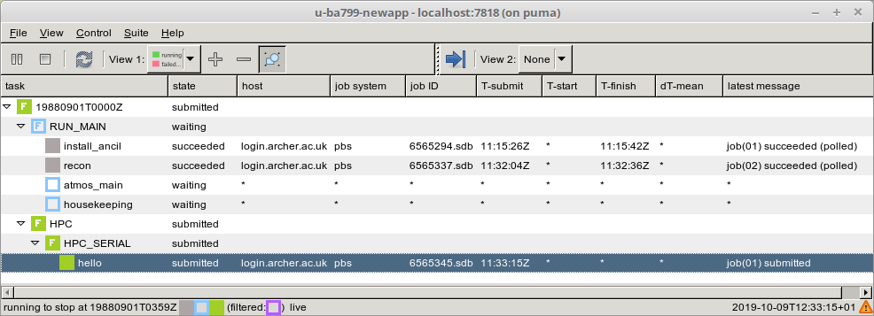

8. Rose/Cylc Exercises¶
8.1. Differencing suites¶
Currently there is no Rose tool to difference two suites. Since a suite consists of text files it is simply a matter of making sure all the Rose configuration files are in the common format by running rose config-dump on each suite and then running diff.
We will difference your copy of the GA7.0 suite with the original one:
puma$ cd ~/roses
puma$ rosie checkout u-ba799
puma$ rose config-dump -C u-ba799
puma$ rose config-dump -C <your-suitename>
puma$ diff -r u-ba799 <your-suitename>
- Are the differences what you expected?
8.2. Graphing a suite¶
When developing suites, it can be useful to check what the run graph looks like after jinja evaluation, etc.
The GA7.0 suite that we have been working with is very simple so we shall graph a nesting suite which is more complex. To do this without running the suite:
puma$ rosie checkout u-ah076
puma$ cd ~/roses/u-ah076
puma$ rose suite-run -l --name=u-ah076 # install suite in local cylc db only
puma$ cylc graph u-ah076 # view graph in browser
A window containing the graph of the suite should appear.
8.3. Exploring the suite definition files¶
Change to the ~/roses/<suite-id> directory for your copy of u-ag263.
Open the suite.rc file in your favourite editor.
Look at the [scheduling] section. This contains some Jinja2 variables (BUILD & RECON) which allow the user to select which tasks appear in the dependency graph. The dependency graph tells Cylc the order in which to run tasks. The fcm_make and recon tasks are only included if the BUILD and RECON variables are set to true. These variables are located in the rose-suite.conf and can be changed using the rose edit GUI or by directly editing the rose-suite.conf file. When you run a suite, a processed version of the suite.rc file, with all the Jinja2 code evaluated, is placed in your suite’s cylc-run directory.
- Take a look at the
suite.rc.processedfile for your suite. Hint: go to directory~/cylc-run/<suite-id>. - Change the values of BUILD and RECON and re-run your suite.
- Look at the new
suite.rc.processedfile. Can you see how the graph has changed?
Make sure that you leave the suite with BUILD=false before continuing.
As we saw earlier when changing the path to the start dump, some settings can’t be changed through the rose edit GUI. Instead you have to edit the suite definition files directly.
- Can you find where the atmos processor decomposition is set for this suite?
- Change atmos processor decomposition to run on 2 nodes. Run the suite.
- What error message did you get? Hint: Look in the usual
job.out/job.error it may be in thejob-activity.logfile.
This error is caused by a mismatch in the number of nodes requested by the PBS job script header and the number of processors requested by the aprun command which launches the executable. (For further information on PBS and the aprun command on ARCHER see: http://www.archer.ac.uk/documentation/user-guide/batch.php).
In the [[atmos]] [[[directives]]] section change -l select=1 to -l select=2 to tell the PBS scheduler that you require 2 nodes.
- The suite should run this time. Did it run on 2 nodes as requested?
- How much walltime has been requested for the reconfiguration?
Now take a look at the suite.rc file for your other suite (the one copied from u-ba799). See how it differs. This one is set up to run on multiple platforms.
- Can you see the more complex dependency graph?
- Can you see where to change the reconfiguration walltime for this suite?
This has just given you a very brief look at the suite definitions files. More information can be found in the cylc documentation.
8.4. Suite and task event handling¶
Suites can be configured to send emails to alert you to any task or suite failures (or indeed when the suite finishes successfully). To send an email, you use the built-in setting [[[events]]] mail events to specify a list of events for which notifications should be sent. Here we will configure your copy of suite u-ba799 to send an email on task (submission) failure, retry and timeout.
Edit the suite.rc file to add the [[[events]]] section below:
[runtime]
[[root]]
...
[[[environment]]]
...
[[[events]]]
mail events = submission retry, retry, submission failed, failed, submission timeout, timeout
submission timeout = P1D
Configure cylc so it knows what your email address is. Edit the file ~/.cylc/global.rc (create it if it doesn’t exist) to add the following:
[task events]
mail to = <enter-your-email-address>
To test this out we need to force the suite to fail. Change the account code to a non-existent one; e.g. ‘n02-fail’
- Did you get an email when the suite failed?
- Look in the suite error files to find the error message?
Change the account code back to ‘n02-training’ before continuing.
Further information about event handlers can be found in the Cylc documentation: https://cylc.github.io/doc/built-sphinx-single/index.html#eventhandling
8.5. Starting a suite in “held” mode¶
This allows you to trigger the running of tasks manually.
To start a suite in held mode add -- --hold to the end of the rose suite-run command:
puma$ rose suite-run -- --hold
The first -- tells Rose that all subsequent options should be passed on to Cylc. This is why the hold option should be added to the end of the command, after any Rose options. Once the suite has started all tasks will be in a held state. It is then possible to select which tasks are run by right clicking on a task in the Cylc GUI and manually triggering it or resetting its state.
Try doing this as a way to run the reconfiguration only in one of your suites.
8.6. Discovering running suites and the multi-suite monitor GUI¶
Suites that are currently running can be detected with command line or GUI tools:
Submit 2 of your suites. It doesn’t matter what tasks they are running for this exercise; compilation, recon or model run.
Now try running the command cylc scan. This lists your currently running suites. For example:
puma$ cylc scan
u-af140 ros@localhost:7770
u-ag761 ros@localhost:7776
There is also a multi-suite monitor GUI, which allows you to monitor the states of all suites you have running in one window. Try running the command:
puma$ cylc gscan &
Double clicking on a suite in gscan opens the gcylc window, which you will be very familiar with by now. For each suite open the gcylc window and stop the suite by going to Control -> Stop Suite, selecting Stop after killing active tasks and clicking Ok.
8.7. Adding a new app to a suite¶
A Rose application or “Rose app” is a Rose configuration for running an executable command, encapsulating details such as scripts, programs and settings.
To add a new app to a suite, we first create a directory to hold the app files. The main details are specified in a configuration file rose-app.conf. We may also specify some metadata to tell the general user what inputs to the task mean (this goes under a meta/ sub-directory or we may reference some standard metadata held elsewhere). Any scripts or executables needed by the new app can be added into an app bin/ directory. General scripts that aren’t specific to the app should go in the suite bin/ directory.
Remember to fcm add any new files that you add to the suite so they will be added to the repository when you next commit.
In order to actually run the app, we need to add a new “task” to the suite which involves editing the suite configuration file suite.rc. We need to specify 3 things:
1) how the new task relates to other tasks, specifically, which task will trigger it and which task will follow it;
2) what the task will run (i.e which app); and
3) how the task will run (i.e. which computer and the resources it will need).
In this example, we will add an app that prints Hello World, which will execute after the reconfiguration and before the main model. We will add the app to your copy of u-ba799.
i. Create the Rose application directory
Make sure the Rose edit GUI for your suite is closed. cd into the suite app/ directory and create a new directory called new_app
puma$ cd ~/roses/<SUITEID>/app
puma$ mkdir new_app
ii. Create the Rose app configuration file
Change into the new_app directory and create a blank app configuration file called rose-app.conf:
puma$ touch rose-app.conf
Start the Rose editor (remember you need to be in the top level of the suite directory). You should now see the new application listed in the left hand panel. At this point it is an empty application and is not integrated into the task chain. Click on the little triangle to the left of new_app to expand its contents (you may need to select View -> View Latent Pages to see this). Everything is greyed out. Click on command to see the command page and then click the plus sign next to “command default” (you may need to select View -> View Latent Variables to see it) and select “add to configuration” to add a command to the application. Enter echo "Hello World" in the “command default” box. Save this and then have a look at the contents of the rose-app.conf file to see the effect.
iii. Add a new task to the suite definition
In order to execute the app, we need to add a new task to the suite workflow. This task executes our new application on a machine that we specify. In this instance we are adding the new task between the reconfiguration and the model run, and the task will be run on ARCHER in the serial queue.
To set this up, edit the suite.rc file. Under,
[scheduling]
[[dependencies]]
find the line
graph = recon => atmos_main
and change it to
graph = recon => hello => atmos_main
This puts the task hello in the right place in the task list.
The next step is to add a definition for the new task. To tell Rose to use one of the apps contained in the suite, we set the environment variable ROSE_TASK_APP in the task definition. General task definitions go in the suite.rc file and the definitions specific to ARCHER in the site/archer.rc file. The queuing system is specific to the host being run on, and there is already a definition for the ARCHER serial queue environment [[HPC_SERIAL]] that we can make use of. To run the new application on ARCHER in the serial queue and give it two minutes to complete, add the following lines to the suite.rc after the definition for [[recon]]:
[[hello]]
inherit = HPC_SERIAL
[[[environment]]]
ROSE_TASK_APP = new_app
[[[job]]]
execution time limit = PT2M
iv. Running the new app
We are now ready to go. Run the suite. Look at the task graph: recon and atmos_main are there, but a new hierarchy of tasks has appeared.
Notice that atmos_main no longer runs after the reconfiguration, but our new task hello does and when that has completed, atmos_main starts. The output from the hello task can be found in the cylc output directory: log/job/19880901T0000Z/hello/NN/job.out.
v. Extending the app to run a script
A more complex application might involve the execution of a script. To do this we would replace the contents of the “command default” box with the name of the script. Then place the script in the app bin/ directory.
Now create a bin/ directory under new_app/ and cd into it. Create a file called hello.sh with the contents,
#!/bin/bash
echo "Hello, $1!"
We will allow the user to select from a variety of planets and say hello. Make it an executable script:
chmod +x hello.sh
Then we can say ./hello.sh Jupiter to get it to print “Hello, Jupiter!”.
Right click on the greyed out new_app -> env in the index panel and click “+ Add env”. Save, then select new_app -> env to view the env page, right click on the blank page and select “Add blank variable”. Two boxes appear: enter PLANET in the first and Jupiter in the second. This adds an environment variable called PLANET and sets it to “Jupiter”.
Now change the command from echo “Hello, World” to hello.sh ${PLANET}.
vi. Testing and Running
The app can be tested in isolation by changing into the new_app/ directory and executing,
rose app-run
This should produce output similar to:
ros@puma$ rose app-run
[INFO] export PATH=/home/ros/roses/u-ba799/app/new_app/bin:/home/fcm/rose-2016.11.1/bin:/usr/local/python/bin:
...
[INFO] export PLANET=Jupiter
[INFO] command: hello.sh ${PLANET}
Hello, Jupiter!
and also a file rose-app-run.conf, which can be deleted.
Now run the suite.
vii. Rose Metadata
Metadata can be used to provide information about settings in Rose configurations. It is used for documenting settings, performing automatic checking and for formatting the rose edit GUI. Metadata can be used to ensure that configurations are valid before they are run.
Metadata for many standard applications, such as um-atmos, fcm_make are all stored centrally on PUMA in ~fcm/rose-meta. Have a look at this directory.
For our example there are currently no restrictions on the variable PLANET. We will now add some metadata to help the user understand what the variable PLANET is and what values it is limited to.
Rose provides some tools to quickly guess at the metadata where there is none. Create a directory meta/ under new_app/ . Then execute the command,
rose metadata-gen
This creates a file rose-meta.conf in the meta/ directory. It just says that there is an evironment variable called PLANET, but it does not know much about it. Edit this file and add the following lines after [env=PLANET]:
description=The name of the planet to say hello to.
values=Mercury, Venus, Earth, Mars, Jupiter, Saturn, Uranus, Neptune
help=Must be a planet bigger than Pluto - see https://en.wikipedia.org/wiki/Solar_System
Now go back to the Rose GUI and select Metadata -> Refresh Metadata. Once the metadata has reloaded, go to the new_app -> env panel. The entry box for PLANET has changed into a drop down list. Pluto is not allowed, presumably because the code cannot handle tiny planets. Right click on the cog next to Planet and select info to see the description and allowed values.
viii. References
A fuller discussion of Rose metadata can be found at https://metomi.github.io/rose/doc/html/tutorial/rose/metadata.html.
Designing a new application may seem a daunting process, but there are numerous existing examples in suites that you can try to understand. For further details, see the Rose documentation at https://metomi.github.io/rose/doc/html/tutorial/rose/applications.html. There are a collection of built-in applications that you can use for building, testing, archiving and housekeeping - see https://metomi.github.io/rose/doc/html/api/rose-built-in-applications.html.